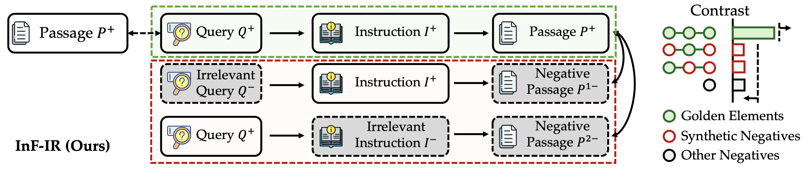
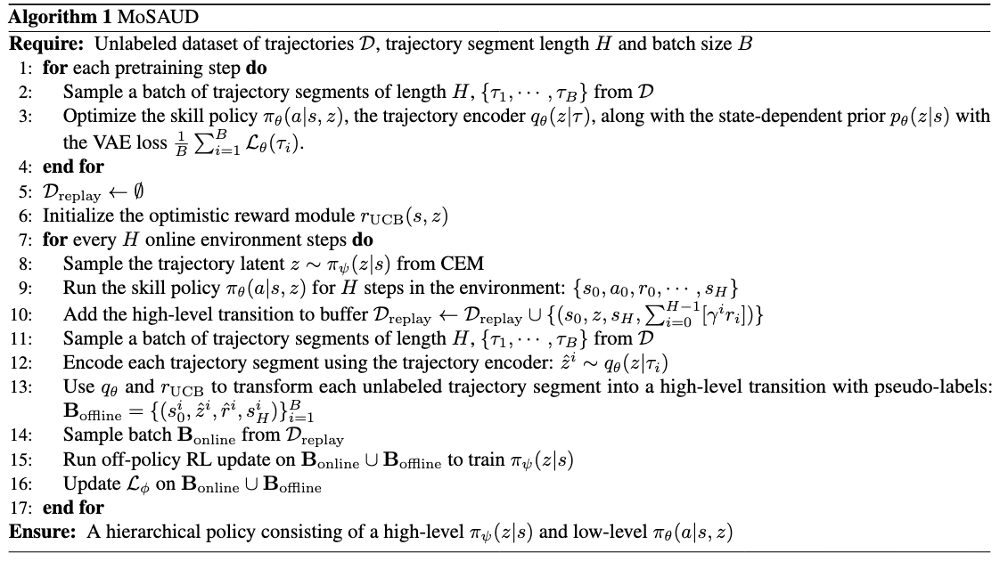

|
Aaron Trinh Hi! I'm a third year Computer Science undergraduate student at Georgia Tech, where I've been fortunate to work with Prof. Sehoon Ha and Prof. Bo Dai. My research interest is in enabling learning of intelligent agents that can reason about the world. To this end, I am interested in foundation models for decision making, world models, and reinforcement learning. atrinh31 [at] gatech [dot] edu / Google Scholar / Github / LinkedIn / Twitter |
Research(* indicates equal contribution) |

|
Reference Grounded Skill Discovery
Seungeun Rho, Aaron Trinh, Danfei Xu, Sehoon Ha International Conference on Learning Representations (ICLR), 2026 arXiv |
|  |
Towards Better Instruction Following Retrieval Models
Yuchen Zhuang*, Aaron Trinh*, Rushi Qiang*, Haotian Sun, Chao Zhang, Hanjun Dai, Bo Dai arXiv, 2025 arXiv / code / data |
Projects |
|  |
Efficient Skill-based Reinforcement Learning
Course Project CS 8803 - Deep Reinforcement Learning code A model-based RL framework that extracts reusable skills from rewardless offline data and reuses the data by relabeling with an optimistic reward estimator for efficient exploration through the learned dynamics model |
|
Template from Jon Barron. |